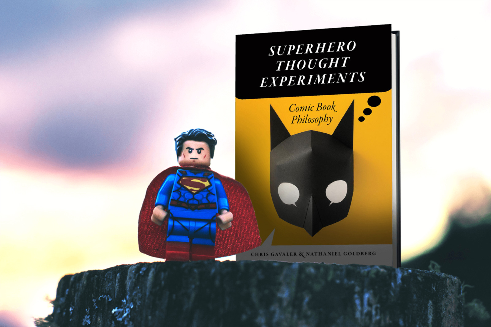

Superhero Thought Experiments
Book review
If you like reading about philosophy, here's a free, weekly newsletter with articles just like this one: Send it to me!
A very enjoyable book that presents classic arguments from philosophy by discussing examples of superhero comics. If you are interested in comics, then this book will give you a good, solid introduction to many interesting problems in philosophy, while also teaching you to see superhero comics from a more sophisticated point of view.

What if an evil genius is tricking you into believing that the world around you is real when it really isn’t? What if on an alternate Earth everything is identical but for one almost undetectable detail? What if trying to travel to the past transported you to a different universe instead? What if a mad scientist removed your brain and is keeping it alive in a vat of nutrients? What if lightning struck a dead tree in a swamp and transformed it into The Swampman?
Any of these fantastical plots could be the premise of a superhero comic book. … Except none of those scenarios comes from comics. They’re all thought experiments written by highly regarded philosophers.
So begins the fascinating journey on which Chris Gavaler and Nathaniel Goldberg take us in their marvellous 2019 book Superhero Thought Experiments.

This book is part of a wider trend to bring the philosophy treatment to popular culture. As far as I know, the most prominent and long-living example of this is the “… and Philosophy” series from Open Court Publishing. From The Simpsons and Philosophy to Lord of the Rings and Philosophy this long-running series (some of the titles were published in the early 2000s), covers all the usual suspects: Dungeons and Dragons, The Matrix, Buffy, Harry Potter, all the way to Stephen Colbert and Philosophy. I was therefore surprised to see that the Superhero book was not in that series but published by University of Iowa Press. This might be one of the reasons why the book has fewer than 10 reviews on Goodreads, when, for example, The Simpsons and Philosophy have over 3,000. The unusual venue may have made it harder for the right audience to find the book.
The book’s audience
But the relative obscurity of the work is certainly not deserved – quite the opposite. I am myself not a superhero audience; my knowledge of the matter is limited to what I’d heard of Superman, Batman and Spiderman as a child, and then, at a later age, reading Alan Moore’s Watchmen. Still, I found Superhero Thought Experiments fascinating and easy to read, even without the background in superhero lore.
One reason is that the authors seem to be very well aware that there are two distinct audiences for their book: philosophy readers who are interested in superheroes, and superhero audiences who are interested in exploring their favourite stories through philosophy. So the authors always take care to explain everything and not to assume that the reader is familiar either with the names and histories of particular superheroes or with concepts from philosophy. This, naturally, limits the depth into which the book can go on either subject. The philosophy stays on a popular, introductory level, and, I assume, so does the treatment of superhero culture. But this is not necessarily a problem. The book clearly is intended as a first introduction to philosophical thinking, and it does quite a good job at that.
The authors
Chris Gavaler is Associate Professor of English at Washington and Lee University, while Nathaniel Goldberg is Professor and Chair of Philosophy at the same university. Goldberg teaches a variety of subjects, from Ancient Greek philosophy to Kant and the Philosophy of Science Fiction, while Gavaler teaches Creative Writing, Fiction topics and, unsurprisingly, Comics and Superheroes. The two have collaborated in at least one more book project, Revising Fiction, Fact, and Faith: A Philosophical Account (2020) and a number of journal articles, of which some have been reused in this book (for example, Alan Moore, Donald Davidson, and the Mind of Swamp Things, The Journal of Pop Culture. 50.2. April 2017, which sounds like it might have been the template for chapter six, “Minding the Swamp”).
Reading the book, one is constantly reminded of the extensive knowledge the authors have of comic culture and the history of superhero comics. Their examples don’t just come from the latest bunch of superhero movies, but go back to 1950s editions of Marvelman, Miracleman, and dozens of other comics I’ve never heard of. All these are discussed in a detail that shows deep familiarity with their histories and the development of their characters across different series and decades.
This is a good thing, because it puts a worry to rest which one might have regarding books like this and the “… and Philosophy” series: That they might just use their pop-culture topic as a thinly veiled excuse to bait particular audiences into buying these books. This is certainly not the case here. Every page of this book is filled with detail and a background knowledge on the history of comics that can only be obtained through years of engagement with this culture and loving research on the topic.
The philosophy in “Superhero Thought Experiments”
As a philosopher, I am naturally in the position to be more critical of the philosophical content than the superhero side of things. The book makes a very solid attempt to introduce readers not only to the most basic philosophical ideas (say, the difference between utilitarian and deontological ethics, illustrated in the different attitudes of Superman vs Batman) – it also discusses in a very entertaining way some more obscure topics. Chapter 3 introduces the reader to Descartes’ Evil Genius, who might be deceiving us about what we think we know. Chapter 4 discusses time, and chapter 5 goes into meaning, talking about descriptivism, rigid designators and multiverses. Later chapters discuss Grice’s notions of conversational implicature and effective communication, Dennett’s understanding of intentional systems, and form vs content in comics art.
This is, of course, a highly eclectic list of philosophers and problems, and not necessarily what every philosopher would see as a “must-know” list for an introduction to philosophy. Ethics is represented surprisingly little, considering that the superhero genre is all about the fight between good and evil and its various complications and ambiguities.
In contrast, a lot of space is given to the discussion of Twin Earth scenarios and meaning, which, at least for me, constitute a much less relevant area of philosophy and one the general public can mostly do without. Still, the discussions are always precise, carefully laid out, and surprisingly deep, without ever being in danger of overwhelming the interested reader. The style of the book is light and conversational, and I can imagine reading it for enjoyment on a beach or lying across a sofa.
Summary of contents
Part I. Morality
- Superconsequences vs. Dark Duties
- What Good Are Superheroes?
Part II. Metaphysics
- Evil Geniuses
- Clobberin’ Time
Part III. Meaning
- Referential Retcons vs. Descriptivist Reboots
- Minding the Swamp
Part IV. Medium
- Caped Communicators
- True Believers
Conclusion: “Comico, ergo sum!”
Part IV, “Medium”, here is perhaps the only part that needs explaining:
The previous three sections have used tools of academic philosophers to analyze the content of superhero comics. This chapter and the next address the comic book medium, setting aside story content and analyzing the philosophical implications of comics as a form. Instead of treating just the stories as thought experiments, we examine larger puzzles presented by comics overall. The medium becomes the thought experiment in which we readers find ourselves, and that’s what needs explaining. As a result, we consider more intricate comic book analyses and to some extent more complicated philosophies, and we look at them in greater detail. This chapter will focus on philosopher H. Paul Grice’s theory of communication and apply it to the visual communication of superhero comics.
Writing style
To get an idea of how the book reads, let me just quote a random passage where the authors discuss the connection between time travel and multiple universes based on particular comics:
What if time travel is really universe travel? Marvel writers established the existence of preexisting alternate universes as early as 1968. In Fantastic Four #118 (January 1972), Ben travels to a world where Reed was mutated into the Thing instead – an event that occurred prior to and thus was unrelated to Ben’s arrival. Writer Roy Thomas returned Ben there in 1975, using not Doom’s device but the superpowered dog Lockjaw: “Now pay attention, pooch! I got ya here because ya can travel through dimensions an’ all that crud” (Fantastic Four #160:15). Instead of time traveling, Ben understood himself as dimension traveling.
Though Reed’s 1979 explanation that Ben created a new universe by attempting to cure his past self contradicts branch eternalism, John Byrne later reinterprets time in light of this eternalism. When Byrne revisited his 1979 Thing story in 1983, Reed reconsiders his earlier conclusions: “I think my original assessment may have been erroneous. I now believe that you did not create that reality” (Marvel Two-in-One #100: 3). That reality, or time branch or alternate universe, is always there. Reed deduces this by studying the recorded footage and sees a copy of what should be the New York Daily Bugle but is instead the New Amsterdam Daily Bugle. He concludes: “The basic data would seem to support that this was an already existing alternate universe” (4). Where eternalism likens different points in time to different points in space, Byrne’s revised philosophy allows Ben to travel to New Amsterdam from New York because New Amsterdam exists in space as much as New York does. It just exists in space on a different time branch — thus in a different universe. The thought experiment’s been reimagined.
Much of the book reads like that, but there are also less involved passages where the authors explain a concept or an idea from philosophy without employing quite so many references. Still, one can clearly see the attempt to explain the philosophical concept behind time travel, while also doing justice to the comics side of things. This is why I believe that a comics reader with an interest in philosophy will gain more out of this book, both in terms of enjoyment and education, than a philosopher with only a passing acquaintance of comics. Sometimes, the references to dozens of comics and superheroes can become a bit much for the uninitiated.
Weakness of the book’s concept
The fundamental problem, of course, at the basis of this difficulty to communicate comics to the philosophical reader, is copyright. While philosophy can be naturally described and discussed through text on a page, comics are an inherently graphic medium that cannot be adequately presented without the original drawings. The authors can paraphrase Grice without any loss of precision, but they are unable to give a vivid impression of Superman’s stories without actually showing the comics – and this they cannot do within this book.
The book does include a small number of original illustrations (11, if I counted right, or about one for every 20 pages of text); but this is not enough to provide sufficient context for the philosophical reader with an interest, but no firm background, in comics. The result is that in many discussions, a reader who does not know their comics history can feel a bit lost and perhaps overwhelmed by the constant introduction of new names of superheroes and reference to their stories and deeds.
To be fair, the authors make a good attempt to introduce all these characters and their essential traits, as far as these are relevant to the discussion. But still, sometimes the book feels like reading a history of art without any pictures, or trying to enjoy a movie by reading its screenplay. There is a limit to how much one can appreciate a visual medium when it is communicated only through text.
The ideal reader
With these books, it’s always a bit of a challenge to imagine the ideal reader. A philosopher with an interest in comics might be put off by lengthy discussions of philosophical issues they already know enough about. And for such readers, the book does not provide sufficient insight into the comics side of things to stand alone. Comics and comic heroes are mentioned throughout the book, although only particular properties of particular superheroes are discussed in some depth. But the interested philosophical reader might go and use the provided pointers for further research or as a buying guide when shopping for comics.
On the other hand, I imagine that a comics aficionado with an interest in philosophy will be served better by this book. The comics discussed do provide excellent examples for the philosophical points made. After reading the book, one will not only have acquired some understanding of many important philosophical arguments of (mainly) contemporary philosophy, but also a deeper appreciation of the comics themselves. The book is a good example for how a philosophical approach to culture can provide insights that would otherwise be unavailable or overlooked – for example the fact, mentioned before, that Superman is a consequentialist while Batman is a Kantian agent. But I also found the discussions of Twin Earth thought experiments interesting, or the discussion of Davidson’s Swampman.
Finally, I thought that perhaps the last part of the book, “Medium”, which is all about the comics themselves and which discusses questions of authorship and depiction in comics, is somewhat less relevant to the core topics that a book like this should cover. One could imagine hundreds of philosophical arguments that are far more engaging and relevant to the history of philosophy than the technicalities of narration and depiction in comics. For example, a book like this could discuss the nature of evil, the philosophical issues with omnipotence and omniscience, virtue ethics, topics from political philosophy regarding state power (or superhero power) and many more. It seems that perhaps the particular interests of the authors dictated a selection of topics (particularly in the last few chapters) that were meant to please them and to allow them to discuss their favourite areas of research more than provide a rounded view of philosophical issues for their audience.
But this is a bit like criticising an excellent chocolate ice cream for not containing enough broccoli. No book can cover everything that would be important in philosophy, and the authors here were forced to make a selection. One cannot really hold it against them that they selected to talk about some chapters that they themselves were most interested in, although one might still dream of an alternate universe in which this book contained a few more chapters on other big arguments in philosophy.
Conclusion
This is a very enjoyable book; more so, I assume, for the comics reader with an interest in philosophy than for the philosopher with an interest in comics. This is primarily due to the difficulty of discussing comics without actually seeing them.
If you are a comics reader of any age, then this book will give you a good, solid introduction to many interesting problems in philosophy, while also teaching you to see superhero comics from a more sophisticated point of view.
Although I myself have no particular taste for superhero stories (or movies), I found the book an engaging read and I enjoyed the clear and often amusing descriptions of philosophical arguments as the authors applied them to the world of superhero stories.

Chris Gavaler and Nathaniel Goldberg (2019). Superhero Thought Experiments. University of Iowa Press. 231 pages. ISBN: 978-1609386559.
“Superhero Thought Experiments”, an extremely enjoyable book by Chris Gavaler and Nathaniel Goldberg, introduces superhero fans to philosophy - and philosophy readers to superhero comic culture.
Amazon affiliate link. If you buy through this link, Daily Philosophy will get a small commission at no cost to you. Thanks!